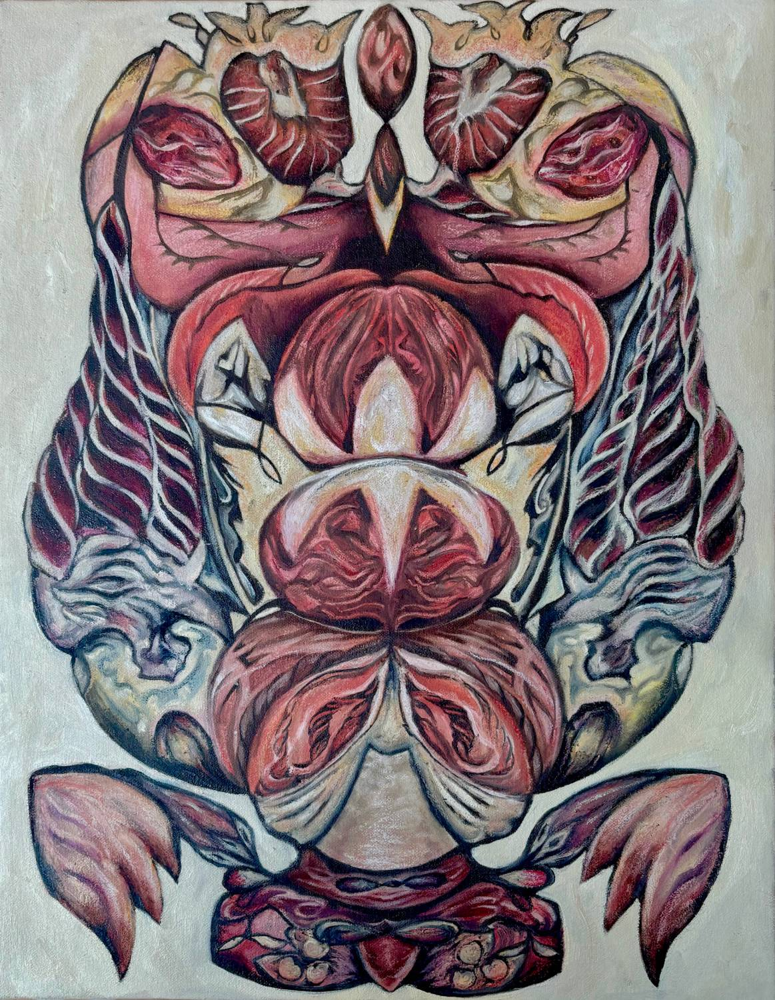
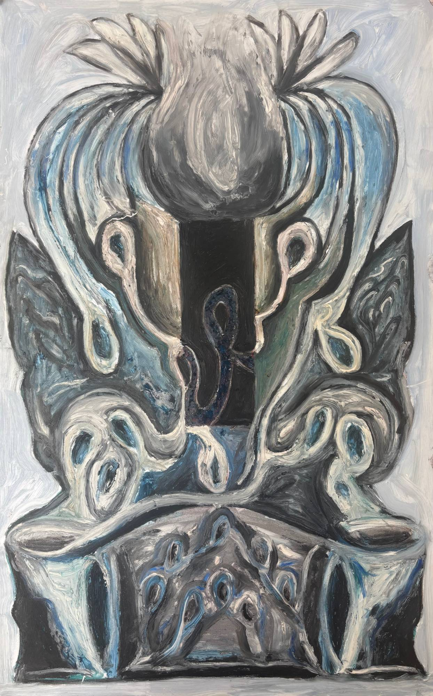

Skip to content
Elsie Ambrose
Home
Artwork
Contact
CV
All artwork
Paintings
Ophelia
2026
Oil paint, graphite, oil pastel, chalk pastel on canvas
60 x 36 in.
Previous
01 / 19
Next
01
02

03
04
05
06
07
08
09
10
11
12
13
14
15
16

17
18
19